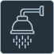

Ar-condicionado
- 
Chuveiro
Secadora
Ferro de Passar
Geladeira
Máquina
Cada pequena atitude conta, e o impacto delas é muito maior do que imaginamos! No nosso dia a dia, gestos que parecem insignificantes têm um poder transformador sobre o meio ambiente e, de quebra, sobre o nosso próprio bolso.
Desligar a luz ao sair de um cômodo, por exemplo, é mais do que um hábito; é uma demonstração de respeito pelos recursos energéticos. Da mesma forma, tirar aparelhos da tomada (o famoso "stand-by" silencioso) evita o consumo fantasma de energia, um vilão muitas vezes subestimado nas contas de luz. E ao escolher equipamentos mais eficientes, com selo Procel ou equivalentes, você não só investe em tecnologia mais inteligente, mas também garante um consumo otimizado a longo prazo.


O cálculo do consumo de energia residencial é simples: baseia-se na potência dos aparelhos e no tempo de uso. A energia é medida em quilowatt-hora (kWh), que é o resultado da potência do aparelho (em Watts) multiplicada pelo tempo que ele fica ligado (em horas), dividido por 1.000. A sua conta de luz soma o consumo de todos os aparelhos da casa e aplica a tarifa. Pequenas mudanças nos hábitos podem gerar grande economia
a seguir uma série de aparelhos que possuem um alto índice de consumo energético!
Ar-condicionado
Chuveiro
Secadora
Ferro de Passar
Geladeira
Máquina